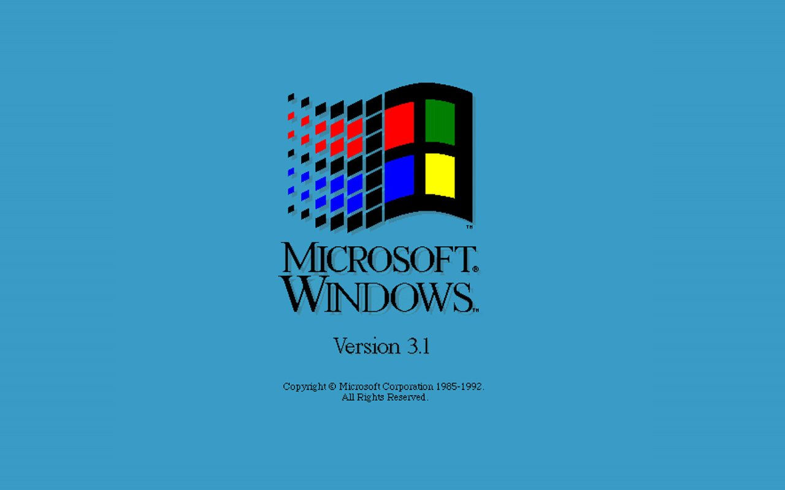

Desktop

Windows 3.0 je objavljen 22. svibnja 1990. god., a sa sobom donosi brojne mogućnosti koje nisu bile dostupne u prethodnim verzijama Windows operacijskog sustava. Grafičko sučelje je bilo blago redizajnirano, iako je još uvijek sličilo onom originalnom sučelju. Uz vizualne promjene, unaprijeđen je način upravljanja memorijom, te je nekim MS-DOS aplikacijama koje su se morale pokretati preko cijelog ekrana (eng. fullscreen), omogućeno pokretanje unutar prozora, što je nadalje unaprijedilo obavljanje više zadataka istovremeno. Sigurnost sustava je također unaprijeđena, a važno je napomenuti da je ova verzija sustava Windows bila prva koja se morala instalirati na tvrdi disk računala. Kao i Windows 2.0, Windows 3.0 je imao i neke manje preinake u svojim novijim verzijama. Tako verzija 3.0a donosi još bolji način upravljanja radnom memorijom, ali i bolju stabilnost. Dok verzija Windows 3.0 s multimedijskim dodatcima omogućava korištenje zvučnih kartica i CD čitača treće strane,u kojoj se prvi put pojavljuje još jedan neizostavni alat svakog Windows operacijskog sustava, a to je program Windows Media Player. Nakon multimedijalne verzije dolazi Windows 3.1 koji donosi još veću stabilnost, TrueType fontove, te međusobno umrežavanje radne grupe, odn. međusobno povezivanje računala. Ovom verzijom je po prvi put omogućeno tzv. „drag and drop“ upravljanje ikonama, koje je danas najzastupljeniji način rada s ikonama. Nakon Windows-a 3.1 dolazi Windows 3.11 kao besplatna nadogradnja, a potom Windows 3.2 namijenjen kineskom tržištu. Sve verzije imaju istu arhitekturu, a podrška im je završila krajem 2001. godine.
Predstavljen: 1990.
Arhitektura: 16-bitna
Podrška: Završila
Stranica je kreirana u sklopu kolegija Informatički Projekt 1 na Fakultetu prirodoslovnih matematičkih i odgojnih znanosti Mostar.
FPMOZ© 2021